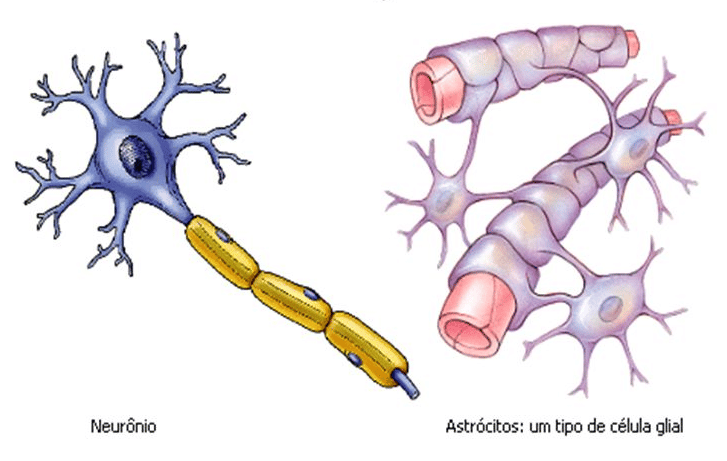
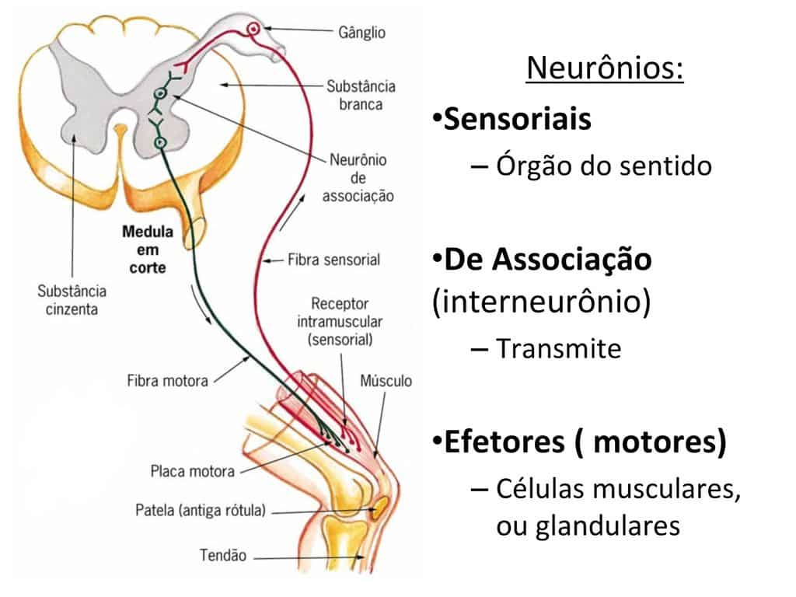
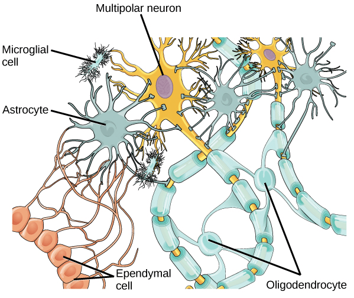

O sistema nervoso é constituído por dois grupos celulares bem distintos:
Neurônios: células especializadas em gerar, conduzir e receber impulsos elétricos. Constituem o grupo de células que formam o parênquima do sistema nervoso. Condicionadas denominação: unidade funcional, apesar das células gliais exercerem papel fundamental para que a atividade dos neurônios ocorra.
Células gliais: um grupo celular diversificado, e muito mais populoso no sistema nervoso do que os neurônios. São células que se multiplicam (realizam mitose) e aumentam consideravelmente a massa do sistema nervoso. Influenciam os neurônios em suas funções e formam o estroma do sistema nervoso. Funções como: regular o ambiente extracelular, estabilizar as sinapses, aumentar a velocidade de condução do impulso nervoso, produção do líquido cerebrospinal e expressar elementos capazes de fornecer uma barreira entre o sangue e o tecido nervoso (barreira hematoencefálica) são algumas de suas funções.
Os neurônios são encontrados nas partes central e periférica do sistema nervoso. Sendo classificados quanto a forma ou função.
As células gliais do sistema nervoso central são: astrócitos, oligodentrócitos, microgliócitos e as células ependimárias. Na parte periférica do sistema nervoso encontramos os neurolemócitos (células de Scwhann) e as células satélites.

Neurônios
Corpo celular ou soma
Contém o núcleo do neurônio, citoplasma e organelas citoplasmáticas.
Recebe e integra os estímulos elétricos (excitatórios ou inibitórios).
O corpo do neurônio geralmente é esférico.
Alguns neurônios apresentam o corpo em forma de uma pirâmide, esses são denominados de neurônios piramidais (são neurônios motores).
Dendritos
Do grego dendro– árvore: são prolongamentos ramificados que se ligam ao corpo do neurônio, aumentando a superfície de contato do corpo celular.
Os dendritos recebem e integram diversos estímulos elétricos recebidos de outros neurônios.
Neurônios específicos apresentam apenas um único dendrito (neurônios bipolares).
Axônio
Do grego axon – eixo: é um prolongamento que se destaca do corpo celular (pode ser denominado de fibra nervosa), de comprimento e diâmetro variável.
Os axônios estão ligados no corpo do celular por meio do cone de implantação (local onde inicia o potencial de ação).
Os axônios podem ser revestidos pela bainha de mielina (axônios mielínicos), ou não apresentar o revestimento (axônios amielínicos).
Os axônios são capazes de gerar, receber e conduzir estímulos elétricos.
Classificações dos neurônios quanto à forma e categoria funcional
Os neurônios podem ser classificados quanto a sua forma.
O fator que influencia na forma é o número de prolongamentos.
Os tipos de neurônios são:
Unipolar, bipolar, multipolar epseudounipolar .
Unipolar
Possuem apenas um prolongamento, o axônio.
Bipolar
Dois prolongamentos deixam o corpo do neurônio, sendo um o axônio e outro o dendrito (não ramificado).
Pseudounipolar
Do seu corpo celular destaca-se apenas um prolongamento.
Não há dendritos ramificados.
Esse prolongamento se divide em T, formando dois ramos (um central e outro periférico).
Multipolar
Apresenta um corpo com diversos dendritos.
Do seu cone de implantação estende-se um axônio.
Quanto à categoria funcional os neurônios podem ser: motores, sensitivos ou de associação.
Os neurônios motores transmitem informações para os órgãos efetores (m. estriado esquelético, m. liso, m. estriado cardíaco ou glândulas).
Os neurônios sensitivos enviam informações captadas por terminações nervosas.
Os neurônios de associação são numerosos nos vertebrados, realizam a conexão de neurônios localizados em diferentes áreas do sistema nervoso.

Neuróglia ou células gliais
As células gliais são numerosas e estão envolvidas com diversas funções: sustentação, proteção, produção do líquido cerebrospinal e formação da bainha de mielina.
Astrócitos
São as células mais numerosas da neuroglia.
Sua forma é estrelada.
Seus prolongamentos unem os neurônios aos capilares (pés vasculares dos astrócitos).
As funções dos astrócitos são: sustentação dos neurônios, formação da barreira hemato-encefálica (controlando a composição do meio extra-celular) e são os principais sítios de armazenamento de glicogênio.
Oligodendrócitos
São células menores e com poucos prolongamentos.
São células responsáveis pela formação da bainha de mielina nas fibras da parte central do sistema nervoso.
Células ependimárias
São células epiteliais, localizadas nos ventrículos (assoalho dos ventrículos laterais e teto do IIIº e IVº ventrículos).
Essas células são revestidas por capilares e tecido conjuntivo, constituindo o plexo corióideo, responsáveis pela formação do líquido cerebrospinal.

Microgliócitos / micróglias
São células pequenas e alongadas, originadas da medula óssea.
São células com função de fagocitose.
Células de Schwann
Também conhecidos como”Neurolemócitos”. São células gliais localizadas na parte periférica do sistema nervoso.
Formam a bainha de mielina das fibras nervosas periféricas.